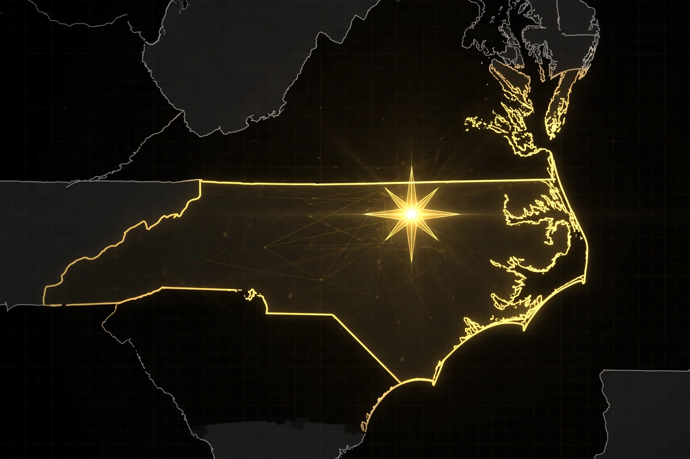

Chaque action d'agent.
Consignée au registre.
VOLSHi donne aux agents IA un registre en ajout seul, qui révèle toute altération, de ce qu'ils croyaient, quand, et pourquoi — pour que chaque action soit auditable.
Le nom a changé. La personne, non. k1 reste identique octet pour octet. Véritable sortie de KATIE en intermédiaire, exécutée contre Postgres — données client de démo, vrai registre. 15 champs · 15 KIDs · 15 historiques indépendants.
L'IA prend des décisions dont elle ne peut pas rendre compte.
Aucun registre de ce qu'elle croyait, quand elle le croyait, ni pourquoi. Les journaux sont réinscriptibles. Une entreprise à 2,5 milliards de dollars vient de s'effondrer sous des poursuites pour sécurité sans piste d'audit. La loi européenne sur l'IA est en vigueur. Retournez les cartes — la boîte noire devient plexiglas.
Voyez ce que font les agents en temps réel — chaque action capturée au moment où elle se produit.
Enregistrez ce que l'agent croyait quand il a agi — confiance, justification, preuves.
Les actions lourdes de conséquences nécessitent une approbation avant de s'exécuter. La prévention, pas l'enquête après coup.
Retracez chaque entrée jusqu'à sa source. Quand quelque chose tourne mal, trouvez la racine.
Chaque affirmation reste liée à ses preuves — d'une session à l'autre, d'un modèle à l'autre.
Reconstruisez toute décision passée dans son intégralité. L'examen d'incident devient une investigation.
Rapports de conformité à la demande. Prêt pour la loi européenne sur l'IA, réglementation américaine à venir.
Le passé reste consigné. Ce qui a été cru, quand, et pourquoi — ineffaçable.
La Perfecta Trifecta.
Trois systèmes. Une seule histoire de conformité.
Télémétrie : Chaque action d'agent observée en temps réel. Chaque croyance, chaque décision, chaque transfert — un reçu émis et inscrit au K-record.
Ancrage : La récupération sans hallucination. Ce qui revient est ancré dans le registre — pas de réponses inventées, pas de fiction confiante.
Continuité : La boucle d'apprentissage externe qui suit l'utilisateur dans n'importe quel modèle avec lequel il interagit. Vous ne repartez plus jamais de zéro.
Ce que l'agent croyait, consigné au registre.
Inspectez l'entrée du K-record à l'époque k = 1042. Faites glisser en continu ou touchez les états pour simuler la progression de la chaîne.
Faites glisser le curseur ou touchez un nœud k. La croyance commence fiable et finit réfutée — mais chaque version reste consignée. Rien n'est effacé. C'est le but.
✓ La croyance tient — l’action était justifiée.
Le travail à venir.
L'intelligence avance plus vite que les systèmes nécessaires pour lui faire confiance.
VOLSHi : CONFORMITÉ POUR LES AGENTS IA.
VOLSHi construit l'infrastructure de conformité pour l'ère des agents IA. Chaque action d'agent reçoit un registre en ajout seul — ce qu'elle croyait, quand, pourquoi c'était justifié, et ce qu'elle a fait en le croyant.
L'intelligence sans responsabilité est un passif. Character.AI l'a prouvé à 2,5 milliards de dollars. La loi européenne sur l'IA impose la traçabilité d'ici décembre 2027 — et chaque entreprise déployant des agents est sur le point d'avoir besoin de la même chose : montrer son travail.
13 diapositives · validé par un tiers — 88/100 à l'évaluation institutionnelle Vettable.
Rendez les agents responsables.
La couche de conformité dont l'industrie est sur le point d'avoir besoin.

La recherche est publique. Le registre est le produit. Brevet en attente.